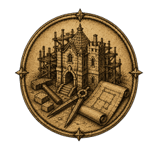
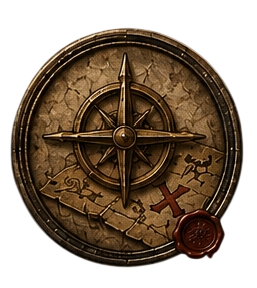
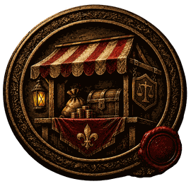

⚜
Безымянный лорд
—
—
Хроника
×1
×10
×60
×600
0
Знамёна
Люди
Гномы
Эльфы
Нежить
☰

Строить

Координаты
Перейти по координатам
Камера перенесётся в указанную клетку мира.
X
Y
Перейти
К своему замку
Отмена
Чат
×
Сказать
×
✓
Почта
Войско
Генерал
Инвентарь
Альянс

Магазин
×
×
Загрузка мира…

 Люди
Люди
 Гномы
Гномы
 Эльфы
Эльфы
 Нежить
Люди
Гномы
Эльфы
Нежить
Нежить
Люди
Гномы
Эльфы
Нежить
 0Люди
Гномы
Эльфы
Нежить
0Люди
Гномы
Эльфы
Нежить